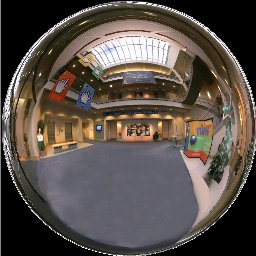

The SphereMap sample illustrates an environment-mapping technique called sphere mapping. Environment mapping is a technique in which the environment surrounding a 3D object (such as the lights) is put into a texture map so that the object can have complex lighting effects without expensive lighting calculations.
Sphere mapping uses a pre-computed (at model time) texture map that contains the entire environment as reflected by a chrome sphere. The idea is to consider each vertex, compute its normal, find where the normal matches up on the chrome sphere, and then assign that texture coordinate to the vertex.
Although the math is not complicated, this still involves computations for each vertex for every frame. Fortunately, Direct3D has a texture-coordinate generation feature that can be used to do this. The relevant RenderState operation is D3DTSS_TCI_CAMERASPACENORMAL, which takes the normal of the vertex in camera space and pumps it through a texture transform to generate texture coordinates. You can use this feature and simply set up your texture matrix to do the rest. In this case, the matrix just has to scale and translate the texture coordinates to get from camera space (–1, +1) to texture space (0, 1).
The environment map is a square texture with usable texture data contained within a circle that is bound by the borders of the texture. The center of the texture corresponds to the view within the environment, from the mesh's point of view, that lies directly behind the camera. As you move toward the outer rim of the usable texture data, the image corresponds to the points in the environment that lie to the sides and rear of the mesh.

Looking at this texture map, you can see that it would be difficult to generate dynamically and that it is view-dependent; the reflection is correct only if the camera is in the location that maps to the center of the texture map. This means that for the texture to look right, the camera must be restricted to one degree of freedom (along the z-axis).
For a complete list of controller mappings, press the Back button on the Xbox controller while this sample is running.